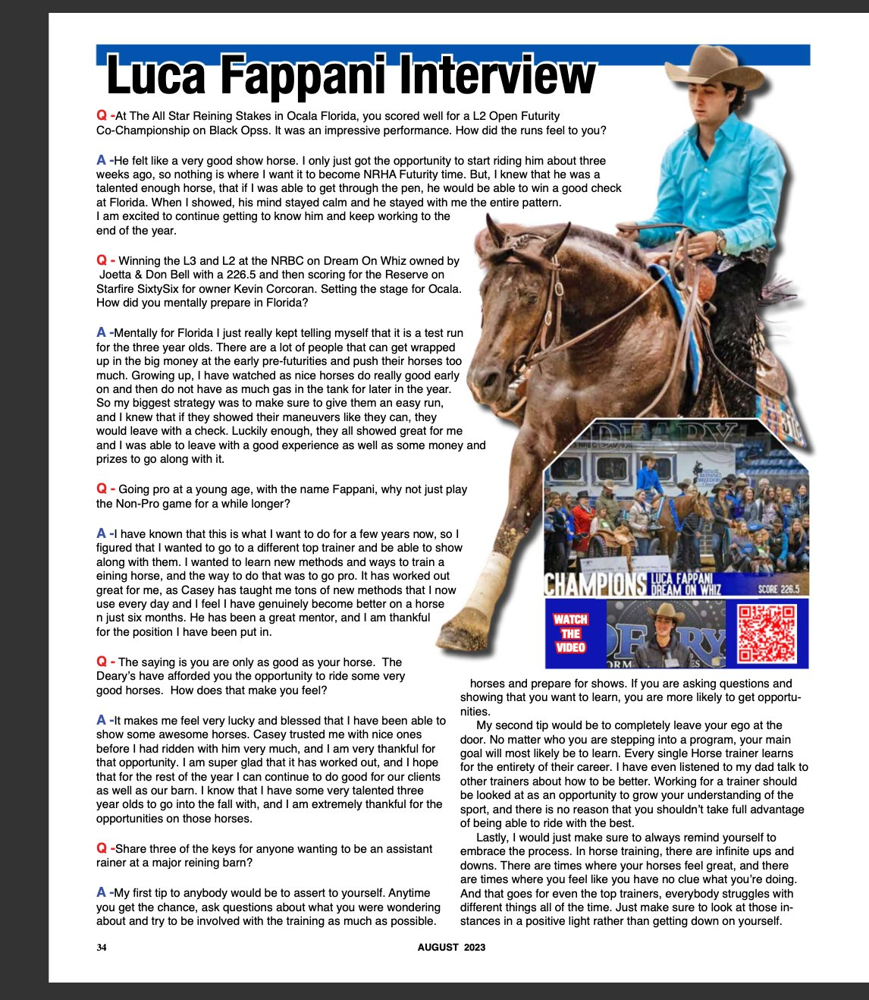

He felt like a very good show horse. I only just got the opportunity to start riding him about three weeks ago, so nothing is where I want it to become NRHA Futurity time. But, I knew that he was a talented enough horse, that if I was able to get through the pen, he would be able to win a good check at Florida. When I showed, his mind stayed calm and he stayed with me the entire pattern. I am excited to continue getting to know him and keep working to the end of the year.
Mentally for Florida I just really kept telling myself that it is a test run for the three year olds. There are a lot of people that can get wrapped up in the big money at the early pre-futurities and push their horses too much. Growing up, I have watched as nice horses do really good early on and then do not have as much gas in the tank for later in the year. So my biggest strategy was to make sure to give them an easy run, and I knew that if they showed their maneuvers like they can, they would leave with a check. Luckily enough, they all showed great for me and I was able to leave with a good experience as well as some money and prizes to go along with it.
I have known that this is what I want to do for a few years now, so I figured that I wanted to go to a different top trainer and be able to show along with them. I wanted to learn new methods and ways to train a reining horse, and the way to do that was to go pro. It has worked out great for me, as Casey has taught me tons of new methods that I now use every day and I feel I have genuinely become better on a horse in just six months. He has been a great mentor, and I am thankful for the position I have been put in.
It makes me feel very lucky and blessed that I have been able to show some awesome horses. Casey trusted me with nice ones before I had ridden with him very much, and I am very thankful for that opportunity. I am super glad that it has worked out, and I hope that for the rest of the year I can continue to do good for our clients as well as our barn. I know that I have some very talented three year olds to go into the fall with, and I am extremely thankful for the opportunities on those horses.
1. Assert yourself. Anytime you get the chance, ask questions about what you were wondering about and try to be involved with the training as much as possible. Help prepare horses and prepare for shows. If you are asking questions and showing that you want to learn, you are more likely to get opportunities.
2. Completely leave your ego at the door. No matter who you are stepping into a program, your main goal will most likely be to learn. Every single horse trainer learns for the entirety of their career. I have even listened to my dad talk to other trainers about how to be better. Working for a trainer should be looked at as an opportunity to grow your understanding of the sport, and there is no reason that you shouldn't take full advantage of being able to ride with the best.
3. Always make sure to embrace the process. In horse training, there are infinite ups and downs. There are times where your horses feel great, and there are times where you feel like you have no clue what you're doing. And that goes for even the top trainers — everybody struggles with different things all of the time. Just make sure to look at those instances in a positive light rather than getting down on yourself.